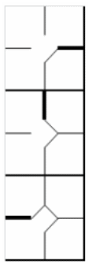

Si un coureur est remplacé alors qu'il occupe une base, ce remplacement est indiqué en épaississant le contour de la case correspondant à cette base. L'exemple illustre, dans l'ordre, le remplacement d'un coureur sur la première, la deuxième et la troisième base.
| Il convient de noter qu'un joueur remplaçant un coureur sur base est désigné comme « Pinch Runner » (coureur suppléant) et indiqué dans la colonne « Pos » par les initiales « PR ». De même, on peut avoir un « Pinch Hitter » (frappeur suppléant) lorsqu'un joueur entre en jeu pour frapper à la place d'un autre. Lors de la demi-manche suivante, un PH ou un PR peut passer en défense ; inscrivez alors sa position défensive dans la case correspondante. Ces joueurs peuvent également être eux-mêmes remplacés par de nouveaux joueurs ; dans ce cas, inscrivez le nom du nouveau joueur sur la ligne suivante de l'ordre de frappe. Comme nous l'avons déjà signalé, un changement en défense est indiqué sur la feuille de l'équipe adverse par un trait horizontal. |
 |